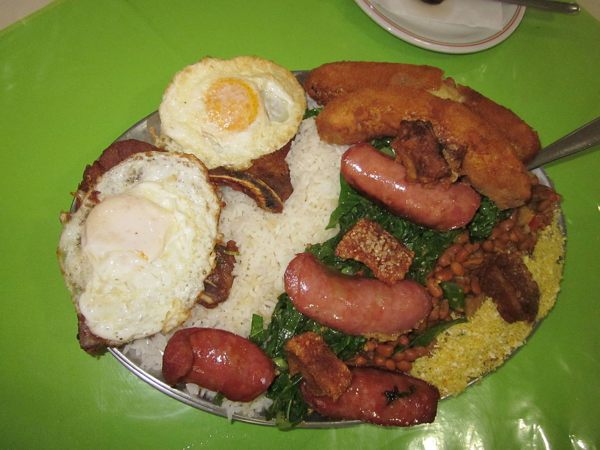

Virado a Paulista

O prato é preparado com feijão cozido e refogado em cebola, alho e gordura, mexido com farinha de milho ou mandioca. Pode variar entre bisteca e costeleta suína frita. Acompanha banana empanada, ovo, couve, torresmo e arroz.São Paulo é a maior cidade do Brasil, conhecida por sua diversidade cultural, gastronomia e vida urbana intensa.
💰 Preço do prato: R$ 32,90
📍 Melhores restaurantes para o prato: Bar da Dona Onça, Pé Pra Fora, Dona Felicidade
Feijoada Carioca

Servida com feijão preto, carnes de porco, arroz, couve, farofa e laranja, comumente aos sábados.
💰 Preço do prato: R$ 73,00
📍 Melhores restaurantes para o prato: Casa da Feijoada, Bar do Mineiro, Academia da Cachaça
Acarajé

O acarajé é um bolinho tradicional da culinária baiana, feito de massa de feijão-fradinho, cebola e sal, frito em azeite de dendê. Ícone da cultura brasileira, é recheado com vatapá, caruru, camarão seco, vinagrete e pimenta. É uma comida de rua patrimônio cultural, com raízes no candomblé.
💰 Preço do prato: R$ 28,00 individual.
📍 Melhores restaurantes para o prato: Acarajé da Cira, Acarajé da Dinha, Acarajé da Regina